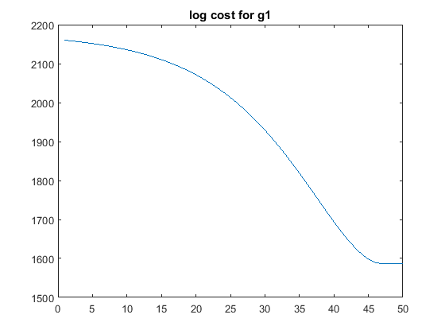
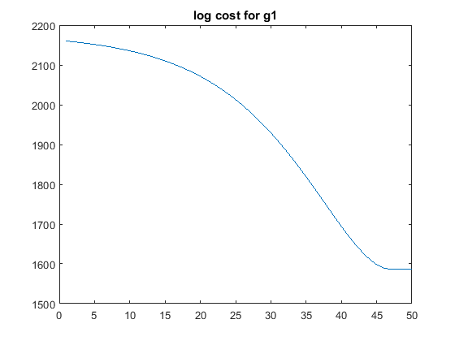

Contents
% CS 736: Assignment 3 % 19th March 2016
Loading the data
clc; clear; close all; load('../data/assignmentImageReconstructionPhantom.mat'); noiselessNorm = sqrt(sumsqr(abs(imageNoiseless))); xInit = ifft2(imageKspaceData); % Initial solution in gradient descent rrmse_init = sqrt(sumsqr(abs(imageNoiseless)-abs(xInit)))/noiselessNorm; fprintf('Initial rrmse = %f \n',rrmse_init);
Initial rrmse = 0.261226
Using quadratic function prior
close all; g = @(x) QuadraticFunction(x);
% alphaRange1 = 1-[0:0.05:0.75 0.76:0.02:0.84 0.85:0.05:1]; % rrmse1 = zeros(length(alphaRange1),1); % % for i=1:length(alphaRange1) % alpha = alphaRange1(i); % % [x,~,~] = GradientDescent(xInit,imageKspaceData,g,100,alpha,imageKspaceMask); % rrmse1(i) = sqrt(sumsqr(abs(imageNoiseless)-abs(x)))/noiselessNorm; % % figure(1); % % plot(logCostArray(1:iters)); % % title('Log cost function'); % end % **Getting the optimum params** % [minVal1,index] = min(rrmse1); % alpha1 = alphaRange1(index); % figure() % plot(rrmse1) % title('rrmse for quadratic prior'); % ** Evaluating for optimum params ** alpha1 = 0.99985; % obtained by using the commented code above for optimization g = @(x) QuadraticFunction(x); [x,logCostArray,iters1] = GradientDescent(xInit,imageKspaceData,g,100,alpha1,imageKspaceMask); x1 = abs(x); logCost1 = logCostArray(1:iters1); minVal1 = sqrt(sumsqr(abs(imageNoiseless)-x1))/noiselessNorm; % ** Evaluating at neighbors ** [x,~,~] = GradientDescent(xInit,imageKspaceData,g,100,alpha1*0.8,imageKspaceMask); neighborVal1_1 = sqrt(sumsqr(abs(imageNoiseless)-abs(x)))/noiselessNorm; [x,~,~] = GradientDescent(xInit,imageKspaceData,g,100,alpha1*1.2,imageKspaceMask); neighborVal1_2 = sqrt(sumsqr(abs(imageNoiseless)-abs(x)))/noiselessNorm;
Using Huber function prior
% alphaRange2 = 0.5:0.02:0.7; % lambdaRange2 = 0.12:0.01:0.22; % % rrmse2 = zeros(length(alphaRange2),length(lambdaRange2)); % % for i=1:length(alphaRange2) % for j=1:length(lambdaRange2) % g = @(x) HuberFunction(x,lambdaRange2(j)); % alpha = alphaRange2(i); % % [x,~,~] = GradientDescent(xInit,imageKspaceData,g,100,alpha,imageKspaceMask); % rrmse2(i,j) = sqrt(sumsqr(abs(imageNoiseless)-abs(x)))/noiselessNorm; % end % end % % % **Getting the optimum params** % [minVal2,index] = min(min(rrmse2)); % lambda2 = lambdaRange2(index); % [~,index] = min(rrmse2(:,index)); % alpha2 = alphaRange2(index); % % **Plotting RRMSE for huber prior** % figure(2); % surf(lambdaRange2,alphaRange2,rrmse2); % title('RRMSE plot for huber prior'); % xlabel('lambda'); % ylabel('alpha'); % ** Evaluating for optimum params** lambda2 = 0.1; alpha2 = 0.99981; % obtained by using the optimization code above (commented) g = @(x) HuberFunction(x,lambda2); [x,logCostArray,iters2] = GradientDescent(xInit,imageKspaceData,g,100,alpha2,imageKspaceMask); x2 = abs(x); logCost2 = logCostArray(1:iters2); minVal2 = sqrt(sumsqr(abs(imageNoiseless)-x2))/noiselessNorm; % **Evaluating at neighbours** g = @(x) HuberFunction(x,lambda2); % (0.8*a,b) [x,~,~] = GradientDescent(xInit,imageKspaceData,g,100,alpha2*0.8,imageKspaceMask); neighborVal2_1 = sqrt(sumsqr(abs(imageNoiseless)-abs(x)))/noiselessNorm; % (1.2*a,b) [x,~,~] = GradientDescent(xInit,imageKspaceData,g,100,alpha2*1.2,imageKspaceMask); neighborVal2_2 = sqrt(sumsqr(abs(imageNoiseless)-abs(x)))/noiselessNorm; g = @(x) HuberFunction(x,0.8*lambda2); % (a,0.8*b) [x,~,~] = GradientDescent(xInit,imageKspaceData,g,100,alpha2,imageKspaceMask); neighborVal2_3 = sqrt(sumsqr(abs(imageNoiseless)-abs(x)))/noiselessNorm; g = @(x) HuberFunction(x,1.2*lambda2); % (a,1.2*b) [x,~,~] = GradientDescent(xInit,imageKspaceData,g,100,alpha2,imageKspaceMask); neighborVal2_4 = sqrt(sumsqr(abs(imageNoiseless)-abs(x)))/noiselessNorm;
Using g3() prior
% alphaRange3 = [0.92:0.01:1]; % lambdaRange3 = [0.0:0.005:0.02]; % % rrmse3 = zeros(length(alphaRange3),length(lambdaRange3)); % % for i=1:length(alphaRange3) % for j=1:length(lambdaRange3) % g = @(x) G3Function(x,lambdaRange3(j)); % alpha = alphaRange3(i); % % [x,~,~] = GradientDescent(imageNoisy,imageNoisy,g,100,alpha); % rrmse3(i,j) = sqrt(sumsqr(abs(imageNoiseless)-abs(x)))/noiselessNorm; % % figure(1); % % plot(logCostArray(1:iters)); % % title('Log cost function'); % end % end % % [val3,index] = min(min(rrmse3)); % lambda3 = lambdaRange3(index); % [~,index] = min(rrmse3(:,index)); % alpha3 = alphaRange3(index); % **Plotting** % figure(3); % surf(lambdaRange3,alphaRange3,rrmse3); % title('RRMSE plot for g3 prior'); % xlabel('lambda'); % ylabel('alpha'); % ** Evaluating for optimum params alpha3 = 0.99996; lambda3 = 0.17; g = @(x) G3Function(x,lambda3); [x,logCostArray,iters3] = GradientDescent(xInit,imageKspaceData,g,100,alpha3,imageKspaceMask); x3 = abs(x); logCost3 = logCostArray(1:iters3); minVal3 = sqrt(sumsqr(abs(imageNoiseless)-x3))/noiselessNorm; % **Evaluating at neighbours** g = @(x) HuberFunction(x,lambda3); % (0.8*a,b) [x,~,~] = GradientDescent(xInit,imageKspaceData,g,100,alpha3*0.8,imageKspaceMask); neighborVal3_1 = sqrt(sumsqr(abs(imageNoiseless)-abs(x)))/noiselessNorm; % (1.2*a,b) [x,~,~] = GradientDescent(xInit,imageKspaceData,g,100,alpha3*1.2,imageKspaceMask); neighborVal3_2 = sqrt(sumsqr(abs(imageNoiseless)-abs(x)))/noiselessNorm; g = @(x) HuberFunction(x,0.8*lambda3); % (a,0.8*b) [x,~,~] = GradientDescent(xInit,imageKspaceData,g,100,alpha3,imageKspaceMask); neighborVal3_3 = sqrt(sumsqr(abs(imageNoiseless)-abs(x)))/noiselessNorm; g = @(x) HuberFunction(x,1.2*lambda3); % (a,1.2*b) [x,~,~] = GradientDescent(xInit,imageKspaceData,g,100,alpha3,imageKspaceMask); neighborVal3_4 = sqrt(sumsqr(abs(imageNoiseless)-abs(x)))/noiselessNorm;
Plotting
noisyImg = abs(xInit); % Finding the minimum and maximum value of the images for creating a colormap jointImage = [abs(imageNoiseless(:)); noisyImg(:); x1(:); x2(:); x3(:)]; minIntensity = min(jointImage); maxIntensity = max(jointImage); % #Printing# fprintf('\n'); disp('*Part 1) Quadratic funnction g1*'); disp(strcat('Min RRMSE = ',num2str(minVal1),'; obtained at alpha* = ',... num2str(alpha1))); disp(strcat('RRMSE at (0.8alpha*) = ',num2str(neighborVal1_1))); disp(strcat('RRMSE at (1.2alpha*) = ',num2str(neighborVal1_2))); fprintf('\n'); disp('*Part 2) Huber function g2*'); disp(strcat('Min RRMSE = ',num2str(minVal2),'; obtained at alpha* = ',... num2str(alpha2),' and lambda* =',num2str(lambda2))); disp(strcat('RRMSE at (0.8alpha*,lambda*) = ',num2str(neighborVal2_1))); disp(strcat('RRMSE at (1.2alpha*,lambda*) = ',num2str(neighborVal2_2))); disp(strcat('RRMSE at (alpha*,0.8lambda*) = ',num2str(neighborVal2_3))); disp(strcat('RRMSE at (alpha*,1.2lambda*) = ',num2str(neighborVal2_4))); fprintf('\n'); disp('*Part 3) function g3*'); disp(strcat('Min RRMSE = ',num2str(minVal3),'; obtained at alpha* = ',... num2str(alpha3),' and lambda* =',num2str(lambda3))); disp(strcat('RRMSE at (0.8alpha*,lambda*) = ',num2str(neighborVal3_1))); disp(strcat('RRMSE at (1.2alpha*,lambda*) = ',num2str(neighborVal3_2))); disp(strcat('RRMSE at (alpha*,0.8lambda*) = ',num2str(neighborVal3_3))); disp(strcat('RRMSE at (alpha*,1.2lambda*) = ',num2str(neighborVal3_4))); fprintf('\n'); % Scaling every image so that [min,max] maps to [0,1] imageNoiseless = (abs(imageNoiseless)-minIntensity)./(maxIntensity-minIntensity); noisyImg = (noisyImg-minIntensity)./(maxIntensity-minIntensity); x1 = (x1-minIntensity)./(maxIntensity-minIntensity); x2 = (x2-minIntensity)./(maxIntensity-minIntensity); x3 = (x3-minIntensity)./(maxIntensity-minIntensity); scale = linspace(0,1,250); cmap = repmat(scale',1,3); figure(4); imshow(abs(imageNoiseless)); colormap(cmap); title('Noiseless image'); figure(5); imshow(noisyImg); colormap(cmap); title('Noisy image'); figure(6); imshow(x1); colormap(cmap); title('denoised with g1'); figure(7); imshow(x2); colormap(cmap); title('denoised with g2'); figure(8); imshow(x3); colormap(cmap); title('denoised with g3'); % Plotting cost functions figure(9); plot(logCost1); title('log cost for g1'); figure(10); plot(logCost2); title('log cost for g2'); figure(11); plot(logCost3); title('log cost for g3');
*Part 1) Quadratic funnction g1* Min RRMSE =0.24288; obtained at alpha* =0.99985 RRMSE at (0.8alpha*) =0.26118 RRMSE at (1.2alpha*) =1.9032 *Part 2) Huber function g2* Min RRMSE =0.20301; obtained at alpha* =0.99981 and lambda* =0.1 RRMSE at (0.8alpha*,lambda*) =0.26119 RRMSE at (1.2alpha*,lambda*) =6.5181 RRMSE at (alpha*,0.8lambda*) =0.26115 RRMSE at (alpha*,1.2lambda*) =0.20616 *Part 3) function g3* Min RRMSE =0.22305; obtained at alpha* =0.99996 and lambda* =0.17 RRMSE at (0.8alpha*,lambda*) =0.2611 RRMSE at (1.2alpha*,lambda*) =6.891 RRMSE at (alpha*,0.8lambda*) =0.2392 RRMSE at (alpha*,1.2lambda*) =0.2733

 
